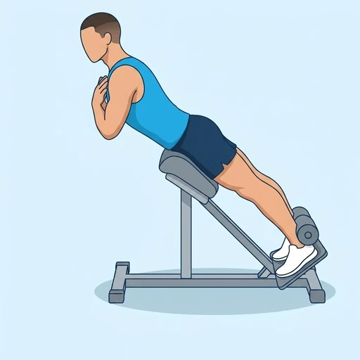

Hyperextension Bench Hold
An isometric hold on a hyperextension bench: you lift your torso until your body forms one straight line from the heels to the head and hold it there. The erector spinae and the glutes stay under tension without the swinging of the dynamic back extension.
Back · Bodyweight · Beginner

Muscles worked by the Hyperextension Bench Hold
Primary
Secondary
Also called: erector spinae, spinal erectors, lower back muscles, back extensors, glute, glutes.
Equipment
No equipment — this is a bodyweight exercise.
How to do the Hyperextension Bench Hold
- Adjust the bench so that the pad sits just below your hip bones and your heels are hooked firmly behind the roller or pad.
- Cross your arms over your chest and lower your torso toward the floor with a straight back.
- Raise your torso until your body is in one straight line from your head to your heels.
- Stop in that line and hold, with your glutes squeezed and your neck in line with your spine.
- Keep your breathing slow and do not arch your lower back past the straight line while you hold for the planned time.
- Lower your torso under control and rest.
Form tips
- Stop at a straight line; leaning back past it hands the work to your lower back joints instead of the muscles.
- Squeeze the glutes during the whole hold, so that the hips stay extended and the lower back is not doing the job alone.
- Hold a weight plate against your chest only after you can hold bodyweight for a full minute.
At a glance
| Body part | Back |
|---|---|
| Category | Strength |
| Force type | Static |
| Mechanic | Isolation |
| Difficulty | Beginner |
| Equipment | Bodyweight |
| Goals | Endurance, Rehabilitation |
| Tags | Back day, Back focus, Knee safe, Shoulder safe, No axial load |
| MET | 3.5 (metabolic equivalent, for calorie estimates) |
| Unilateral | No |
| Bodyweight | Yes |
| Dataset id | hyperextension-hold-bench |
Hyperextension Bench Hold in German & Spanish
| German | Hyperextension-Bank-Halt |
|---|---|
| Spanish | Hiperextensión en Banco Isométrica |
Descriptions, instructions and tips ship in all three languages in the JSON.
Related exercises
Exercise data (JSON)
The record below is exactly what exercises.json ships for this exercise — names, descriptions, instructions and tips in English, German and Spanish.
{
"id": "hyperextension-hold-bench",
"name_en": "Hyperextension Bench Hold",
"name_de": "Hyperextension-Bank-Halt",
"name_es": "Hiperextensión en Banco Isométrica",
"description_en": "An isometric hold on a hyperextension bench: you lift your torso until your body forms one straight line from the heels to the head and hold it there. The erector spinae and the glutes stay under tension without the swinging of the dynamic back extension.",
"description_de": "Ein isometrischer Halt auf der Hyperextension-Bank: Du hebst den Oberkörper, bis dein Körper von den Fersen bis zum Kopf eine gerade Linie bildet, und hältst ihn dort. Rückenstrecker und Gesäßmuskeln stehen unter Spannung, ohne das Schwingen der dynamischen Rückenstreckung.",
"description_es": "Un aguante isométrico en un banco de hiperextensión: elevas el torso hasta que el cuerpo forma una sola línea recta desde los talones hasta la cabeza y la mantienes. Los erectores espinales y los glúteos permanecen bajo tensión sin el balanceo de la extensión de espalda dinámica.",
"category": "strength",
"force_type": "static",
"mechanic": "isolation",
"difficulty": "beginner",
"body_part": "back",
"primary_muscles": [
"erector_spinae",
"gluteus_maximus"
],
"secondary_muscles": [
"hamstrings"
],
"goals": [
"endurance",
"rehabilitation"
],
"tags": [
"back_day",
"back_focus",
"knee_safe",
"shoulder_safe",
"no_axial_load"
],
"variation_group": "back-extension",
"is_unilateral": false,
"is_bodyweight": true,
"instructions_en": [
"Adjust the bench so that the pad sits just below your hip bones and your heels are hooked firmly behind the roller or pad.",
"Cross your arms over your chest and lower your torso toward the floor with a straight back.",
"Raise your torso until your body is in one straight line from your head to your heels.",
"Stop in that line and hold, with your glutes squeezed and your neck in line with your spine.",
"Keep your breathing slow and do not arch your lower back past the straight line while you hold for the planned time.",
"Lower your torso under control and rest."
],
"instructions_de": [
"Stelle die Bank so ein, dass das Polster knapp unter deinen Hüftknochen sitzt und deine Fersen fest hinter der Rolle oder dem Polster eingehakt sind.",
"Kreuze die Arme vor der Brust und senke den Oberkörper mit geradem Rücken Richtung Boden.",
"Hebe den Oberkörper, bis dein Körper von Kopf bis Fersen eine gerade Linie bildet.",
"Stoppe in dieser Linie und halte, die Gesäßmuskeln angespannt und den Nacken in Verlängerung der Wirbelsäule.",
"Halte die Atmung langsam und überstrecke den unteren Rücken nicht über die gerade Linie hinaus, während du für die geplante Zeit hältst.",
"Senke den Oberkörper kontrolliert ab und ruhe dich aus."
],
"instructions_es": [
"Ajusta el banco de modo que el pad quede justo por debajo de los huesos de la cadera y los talones queden bien enganchados detrás del rodillo o del pad.",
"Cruza los brazos sobre el pecho y baja el torso hacia el suelo con la espalda recta.",
"Eleva el torso hasta que el cuerpo quede en una sola línea recta desde la cabeza hasta los talones.",
"Detente en esa línea y mantén la posición, con los glúteos apretados y el cuello alineado con la columna.",
"Mantén la respiración lenta y no arquees la zona lumbar más allá de la línea recta mientras aguantas el tiempo previsto.",
"Baja el torso de forma controlada y descansa."
],
"tips_en": [
"Stop at a straight line; leaning back past it hands the work to your lower back joints instead of the muscles.",
"Squeeze the glutes during the whole hold, so that the hips stay extended and the lower back is not doing the job alone.",
"Hold a weight plate against your chest only after you can hold bodyweight for a full minute."
],
"tips_de": [
"Stoppe in der geraden Linie; wenn du dich darüber hinaus zurücklehnst, übernehmen die Gelenke des unteren Rückens die Arbeit statt der Muskeln.",
"Spanne die Gesäßmuskeln während des gesamten Halts an, damit die Hüfte gestreckt bleibt und der untere Rücken die Arbeit nicht allein macht.",
"Halte erst dann eine Gewichtsscheibe vor die Brust, wenn du das Körpergewicht eine volle Minute halten kannst."
],
"tips_es": [
"Detente en una línea recta; inclinarte hacia atrás más allá de ella pasa el trabajo a las articulaciones lumbares en lugar de a los músculos.",
"Aprieta los glúteos durante todo el aguante, para que las caderas permanezcan extendidas y la zona lumbar no haga todo el trabajo sola.",
"Sostén un disco contra el pecho solo cuando puedas mantener el peso corporal durante un minuto completo."
],
"met": 3.5,
"images": {
"flat": {
"main": "images/flat/hyperextension-hold-bench-main.webp"
}
}
}Fetch just this exercise
const { exercises } = await fetch(
"https://exercise-dataset.com/exercises.json"
).then(r => r.json());
const ex = exercises.find(e => e.id === "hyperextension-hold-bench");Free for personal and commercial in-app use with attribution (“Exercise data by RepDB”) — see the license and ready-made attribution snippets. Redistributing the data as a dataset or API is not permitted.